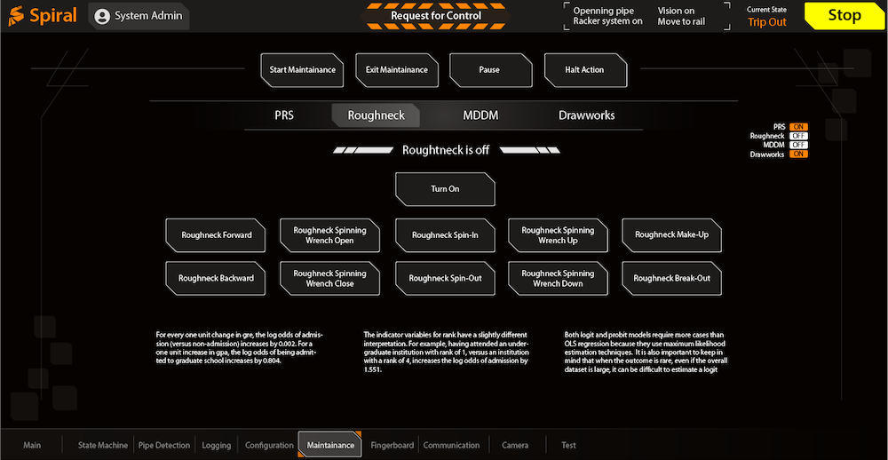
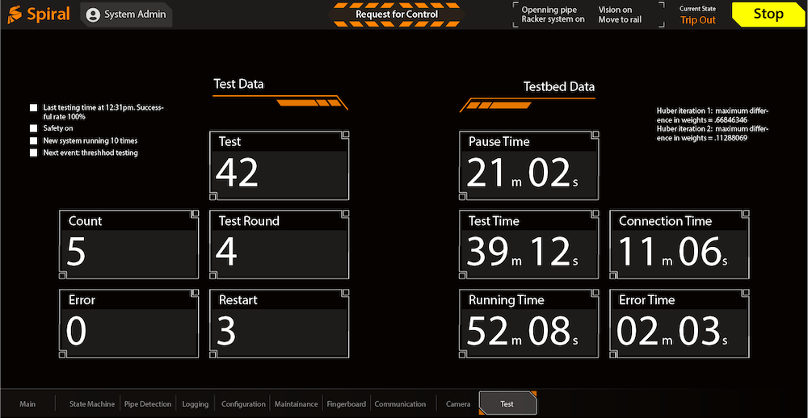

This is a web app designed to increase the safety of the operators and efficiency while working on a drill ship.
Acording to NIOSH Fatalities in Oil and Gas Extraction (FOG) Database ([1,2]), there are over 100 workers died every year. The database also indicates that the fatality rate is rising from 2003 to 2016. An oil and gas extraction worker fatalities report identified 88 deaths among 101 work-related fatalities that occurred in 2014 with an average of eight per month. The operation could be determined in 75 (85%) of the 88 incidents, among which the largest number of fatalities occurred during drilling operations. Contact injuries made up a large proportion of fatalities during drilling operations (38%), casing installation (80%), and well servicing, workover, or intervention (33%).
To reduce the risk of oil and gas operation and workers, it is of great importance to developing a software interface to increase the work site safety.
The report also classifies the incident common factors and activities. By analyzing the data, one can make the assumption that the injuries and even fatalities are caused by misconduct in communication, lack of alert or indications of danger, long operation time and fatigue, high pressured environment.
Based on the above evidence, one can come to the following conclusions to improve the software interface in the need of safety operation: Clear and simple arrangement of contents, high accessibility, and readability, introduce enough redundancy, simulate the physical environment, consideration in different environment conditions.
Louis Rosenfeld states that people act in various models when looking for information. "Information needs are like fishing: sometimes people know exactly what they are looking for, but often they're casting a wider net." [3]
While designing information architecture (IA) of a software interface, collecting data and categorization are acting in important roles. We used field investigation and analysis, user interview, industry report to collect data and list the operation processes as levels of importance, e.g. operators need to calibrate the alignment of pipes before they can move on to assemble them. However, they still want to be able to access other functions even the calibration process is not completed or has failed. The latter implies the relationship between different functions, even they seem to be irrelevant.
As stated, a hierarchical structure is applied. The following is the comparison of the architecture between a common control interface and our interface.
Figure 1. The IA comparison of common control interface and ours.It is easy to infer that our interface significantly decreases the complexity of operating such software systems. By combining similar processes and deleting unnecessary steps, instead of using a deep and intertwined structure, our interface has a low depth and clear IA. Thus our design improves the learning curve and increases the efficiency of finishing a task. With less information required per task in our interface, the new workflow can greatly decrease the fatigue and minimize the total operation time, thus increase the safety of the operators. Our IA has the following advantages: finish a task with fewer steps, easy and fast to switch tasks, clear branches and fewer dependencies.
To improve the readability, we conduct the onsite survey and decide the intuitive visual feedback that is easy to recognize, such as warning colors, notification, indication for safety, areas of caution.
We collected data from 20 technical and 10 none-technical participants, varying from 20 to 50 years of age. We utilize quantitative analysis method to analyze the survey and the outcome of the analysis is shown in figure 2.
Figure 2. Visual indicator design.Figure 2 shows that the color chosen should be consistent with industry convention, e.g. green for ON, red for OFF. The correct color can decrease the time for digesting the information, thus keeps a consistent workflow. To increase the accessibility, the color blindness test was conducted as well. It also implies that operators prefer text explanation over icons for indicating complex working task. Because unconventional icons mostly cause confusion rather than simplifying a problem. It is also true that to locate menus in the bottom of the screen is better because the top bar usually serves as a collection of indicators or quick access. Operators can quickly glance over the screen, of which the eye flow generally happens from top to bottom, to find or solve problems at once.
Warm text color in a dark background is used to enhance the readability in different environmental conditions. This will be discussed later.
To further improve the readability, we analyze the spatial arrangement of UI elements, whereas Hick's law [4] is applied. To minimize the response time of human, the number of alternative selection for work needs to be minimized.
Many studies have demonstrated that naive implementation of autonomy can result in opaque systems unless a focus of the system architecture is the interdependence between human and robotic system [5]. Our goal is a tenfold decrease in the mental burden required by a human operator as measured using traditional practices [6]. A focus on operator mental burden will yield the required focus on the man-machine interdependence thus to increase the usability that is often overlooked.
An example is that in each page, where the main tasks or a main category of tasks are located, we minimized the steps taken to finish a task by combining two or more functions into one serialized function. Using computer vision, machine learning, and other computational methods, we can also minimize the amount of information provided to the user. This further decreases the fatigue and requires less manipulation from the user.
An example of the control page is shown in figure 3.
 Figure 3. An example of control page.It is a common manner to add enough redundancies in a hardware system to increase safety, it is also true when it comes to the software interface design. The benefits of redundancies are to tolerate user's mistakes, to help the user quickly fix problems, to prevent system malfunctions.
Designed redundancies are usually a set of two (sometimes more) user flows or interface mechanics that allow a user to achieve the same result. Designed redundancies can aid discoverability or be a good fallback system to increase accessibility and decrease frustration. [7]
We investigated each major tasks and collect user feedback in onsite testing. We added three categories of redundancies as following.
1. Add emergency stop button for "soft" stop while still keep the physical button for "hard" stop. "Soft" stop button often acts as a quick stop command without shutting down the whole system which will take much longer time to recover.
2. Same or similar data or function of buttons can appear in multiple pages. This is to decrease the number of time user need to switch pages to complete a series of tasks. A page switch can easily cause an interruption in the workflow and thus increase the rate of making mistakes.
3. We created two types of buttons: single task button and multiple task button. A multiple task button can be a combination of two or more single task buttons. Although the creation of new buttons increases the overall number of elements, interpreted from the feedback, users prefer consistency over interruption.
Figure 4 is the individual page for testing time monitoring.
 Figure 4. Testing time page.In order to design an intuitive interface to decrease the learning curve and to create a friendly working environment. we take consideration of the physical facilities and simulate as much as we can in the software interface.
One example is button push. In real life physical world, when a rigid button is pushed, the button size becomes smaller from the angle of users observation. This is the same in our interface.
Another example is the layout of the pipe grid. The grid of pipes in our interface is the same layout and dimensions as in the work site. Because the grid in different working site could have different settings, we applied a dynamic layout method to load the setting on a work site before constructing the virtual grid on the interface. This keeps the layout to be the same as in the current work site.
Figure 5 is an example of the grid page.
Figure 5. Grid page.This is an interesting theory stating that a good interface design should have consistent readability and accessibility under different environmental conditions and devices, e.g. bright sunlight, dim lighting, rainy days, or on highly reflective screens. One problem is that if the interface screen is reflecting the surrounding images, how can we design a layout and correct contrast to reduce the effect or even take advantage of that reflection? The research on this topic was created recently and the problem is complex. We are gradually collecting data to analyze. The method is based on the investigation of workspace. We take measurement of some physical objects and surroundings, the screen sizes, office sizes, locations, environment lights, etc. The goal is to extract information leading to the adjustment of color, layout, UI element locations.
Our software has succesfully increased the workspace safety by the following.
1. Decreases the total steps and time to finish a task.
2. Requires less people to finish a task.
3. Observably decrease number of people appearing in dangerous areas (our computer vision system collects data and shows less number and time per person spent in the dangerous areas.)
Our software system increases efficiency by 20% with room to improve.
1. "Oil and Gas Extraction Worker Fatalities 2014". CDC. 2017.
2. NIOSH Fatalities in Oil and Gas Extraction (FOG) Database. 2016.
3. L. Rosenfeld, P. Morville, J Arango, "Information Architecture: For the Web and Beyond 4th Edition". O'Reilly Media, 2015.
4. Hick WE. "On the rate of gain of information". Quarterly Journal of Experimental Psychology. 1952;4:11-26.
5. M. Johnson, et al: The Fundamental Principle of Coactive Design: Interdependence Must Shape Autonomy, In: COIN 2010 International Workshops, LNAI 6541, pp. 172–191, 2011.
6. N. Moray, ed. "Mental workload: Its theory and measurement. Vol. 8". Springer Science & Business Media, 2013.
7. J.J. Ramirez. "Designed Redundancies: UX Patterns To Unblock Frustration…And Save Lives". 2017.
CLOSE